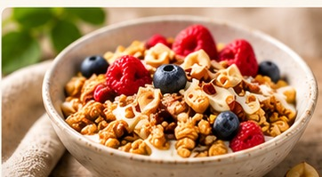
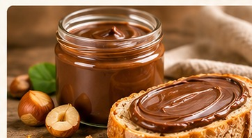
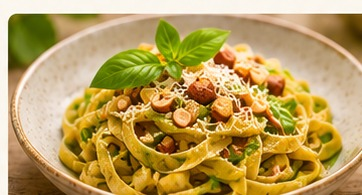
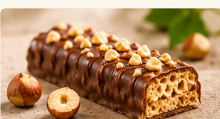
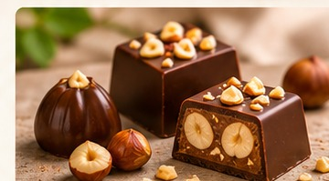
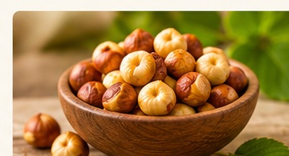

WAAROM HAZELNOTEN?
Klein van formaat.
Groots in mogelijkheden.
Een verfijnde smaak, waardevolle voedingsstoffen en verrassend veel toepassingen. Hazelnoten verdienen een plaats op elk moment van de dag.

Op de boterham

Bij het middagmaal

Als tussendoortje

Als dessert

Puur genieten
VAN NATURE VOEDZAAM
Klein nootje, grote voedingswaarde.
Hazelnoten zijn niet alleen heerlijk van smaak, ze zitten ook boordevol waardevolle voedingsstoffen. Ze bevatten van nature onverzadigde vetten, plantaardige eiwitten en voedingsvezels. Daarnaast leveren ze vitamine E, vitamine B1 en mineralen zoals magnesium en koper.
Een handje hazelnoten is een voedzame aanvulling op je dagelijkse voeding. De eiwitten dragen bij aan het behoud van spieren, terwijl vitamine E helpt om onze cellen te beschermen tegen oxidatieve stress.
Puur, geroosterd of verwerkt in een heerlijk gerecht: met hazelnoten kies je voor smaak én voedingswaarde.
De voedingswaarde kan verschillen naargelang de bereiding. Chocoladeproducten en gezoete hazelnootpasta hebben een andere samenstelling dan pure hazelnoten.